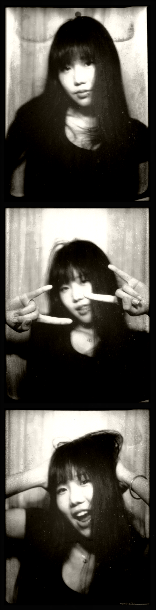

Marketing taught me
Attention is fragile. If the path is unclear, people leave.
About
I’m a Toronto-based UX designer and Master of Information student at the University of Toronto. My background in digital marketing and product operations taught me to pay attention to behavior — what people click, ignore, hesitate on, and abandon.
I use research, structure, and visual details to make digital experiences easier to start, follow, and trust.

How I Got Here
Before UX, I studied Digital Enterprise Management and worked across digital marketing, product operations, content strategy, and user engagement. A lot of that work was about noticing patterns: what people searched for, what they clicked, where they dropped off, and what feedback kept repeating.
That background changed how I approach design. I don’t start by asking how to make a screen prettier. I start by asking what the user is trying to do, where the system makes that harder, and what needs to become clearer before the interface can feel easy.
Attention is fragile. If the path is unclear, people leave.
Repeated complaints usually point to a system problem.
A good interface turns behavior patterns into structure, guidance, and trust.
My Design Lens
Where do people hesitate, ignore, overthink, or abandon?
How can the flow make the next step easier to understand?
What should this experience feel like before users even read the details?
How I Work
I like discussing ideas early instead of protecting them until they feel perfect. Talking through a messy idea often helps me find the real problem faster.
I’m collaborative, but not passive. I like having a clear design opinion, then using critique to sharpen it instead of watering it down.
I often begin by imagining myself in the user’s situation, but I don’t treat that as proof. I use it as a starting hypothesis to check through research, critique, and usability testing.
I pay attention to whether an experience feels easy to enter, easy to follow, and safe to continue — not just whether the screen looks clean.
Moodboard Brain
My visual taste comes less from one “style” and more from collecting moods: fashion styling, photography, film scenes, anime worlds, and music videos. I notice lighting, rhythm, composition, and character — the small choices that make something feel intentional before it becomes explainable.
Resume / Contact
My resume has the full timeline, but the short version is: I’m building UX work around clarity, behavior, and visual personality.